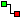

Premiers pas
Cinq étapes pour passer d’un panneau vide à un circuit qui fonctionne. L’exemple :
une lampe qui ne s’allume que si deux interrupteurs sont enclenchés (une porte ET).
1. Choisir un panneau
Cliquez sur Choix du panneau et choisissez
Nouveau panneau standard. Vous obtenez un panneau vide avec la barre des composants en haut.
S’il y manque un bouton, le niveau est peut-être trop bas : choisissez-en un avec
Choix du panneau › Niveau (pour cet exemple, Base suffit).
2. Placer des composants
Chaque composant se place de la même façon : cliquez sur son bouton dans la barre des composants (le pointeur de la souris
prend la forme du composant), puis cliquez sur le panneau à l’endroit voulu.
- Commencez par l’alimentation, dans le groupe Alimentation : placez la
 source
en haut au milieu, le
source
en haut au milieu, le  rail + rouge à gauche et le
rail + rouge à gauche et le
 rail − bleu à droite.
rail − bleu à droite.
- Dans le même groupe, cliquez sur l’
 interrupteur et placez-le
à droite du rail +. Placez un deuxième interrupteur en dessous.
interrupteur et placez-le
à droite du rail +. Placez un deuxième interrupteur en dessous.
- Placez une
 porte ET au milieu du panneau.
porte ET au milieu du panneau.
- Placez une
 lampe à deux bornes
(aussi dans le groupe Alimentation) à droite de la porte, un peu avant le rail −.
lampe à deux bornes
(aussi dans le groupe Alimentation) à droite de la porte, un peu avant le rail −.
- La lampe sera branchée sur une porte et doit donc être une lampe pour 5 V : clic droit sur la lampe ›
Tension de la lampe › Lampe pour 5 V (aussi sur une porte).
Faites glisser un composant placé avec le bouton gauche de la souris pour le déplacer. Faites glisser une extrémité
d’un rail pour l’allonger.
3. Relier
- Dans la barre des composants, cliquez sur

Connexion.
Le pointeur devient un fil.
- Cliquez sur la borne + de la source (en bas à gauche). Un bout de fil apparaît. Faites glisser son extrémité vers la ligne
du rail +. Reliez de la même façon la borne − de la source (en bas à droite) à la ligne du rail −.
- Cliquez sur la ligne du rail +, à la hauteur du premier interrupteur, et faites glisser l’extrémité du fil vers la
borne gauche de cet interrupteur. Faites de même pour le deuxième interrupteur.
- Tirez un fil de la borne droite du premier interrupteur vers une entrée de la porte ET, et un fil de la
borne droite du deuxième interrupteur vers l’autre entrée.
- Tirez un fil de la sortie de la porte ET vers la borne gauche de la lampe, et un fil de la borne droite
de la lampe vers la ligne du rail − : le circuit est ainsi fermé.
Plus de détails dans Connexions et dans Le circuit d’alimentation.
4. Simuler
Cliquez sur  Démarrer la simulation.
Les boutons de modification et la barre des composants disparaissent. Cliquez sur les interrupteurs :
la lampe ne s’allume que si les deux sont enclenchés. Cliquez à nouveau sur le bouton de simulation
pour revenir à la modification.
Le même circuit est prêt à l’emploi dans la leçon 4 : La porte ET.
Démarrer la simulation.
Les boutons de modification et la barre des composants disparaissent. Cliquez sur les interrupteurs :
la lampe ne s’allume que si les deux sont enclenchés. Cliquez à nouveau sur le bouton de simulation
pour revenir à la modification.
Le même circuit est prêt à l’emploi dans la leçon 4 : La porte ET.
5. Enregistrer
Cliquez sur  Enregistrer le panneau et donnez un nom.
Les panneaux sont enregistrés en fichier
Enregistrer le panneau et donnez un nom.
Les panneaux sont enregistrés en fichier .lpl dans le dossier panels.
 Ouvrir un panneau permet de le recharger plus tard.
Ouvrir un panneau permet de le recharger plus tard.
Astuce : Choix du panneau propose aussi trois panneaux intégrés. Le
Panneau compteur et le
Panneau mémoire sont entièrement câblés et fonctionnent tout de suite. Dans le
Panneau de décision, les composants sont en place et tout est déjà relié au + et au − ; les fils vers
les portes et depuis les portes, c’est vous qui les posez. Voir
Panneau & grille.